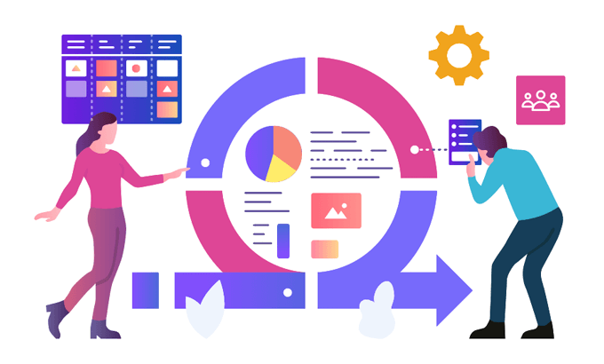

Metodología Scrum

¿Qué es Scrum?
Scrum es un marco de trabajo (framework) ágil que permite a los equipos entregar valor de manera rápida y eficiente. Se basa en principios como la colaboración, la flexibilidad y la mejora continua, y está diseñado para facilitar el trabajo en equipo mediante iteraciones cortas conocidas como "sprints".
¿Por qué Scrum es importante?
Scrum ha demostrado ser efectivo en una variedad de industrias, desde el desarrollo de software hasta el marketing, ya que permite adaptarse rápidamente a los cambios y mantener el enfoque en la entrega de valor al cliente. Algunas de las principales razones por las que las organizaciones adoptan Scrum incluyen:
- Mayor productividad: Los equipos trabajan de manera más organizada y enfocada.
- Adaptabilidad: Scrum permite a los equipos ajustarse rápidamente a cambios en el proyecto o el mercado.
- Mayor transparencia: Las reuniones diarias y las revisiones periódicas permiten a todos los miembros del equipo estar al tanto del progreso.
- Mejor colaboración: Al estar todos involucrados en el proceso, los equipos colaboran estrechamente y resuelven problemas más rápido.
Beneficios